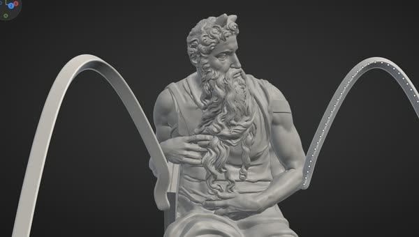

Welcome to SculptForge

Start here#
 Your first sculptAn owl head from the default sphere, in ten minutes.
Your first sculptAn owl head from the default sphere, in ten minutes. Quick tourFor experienced sculptors: what is the same and what differs.
Quick tourFor experienced sculptors: what is the same and what differs.
What's newWhat changed in each release. InstallDownloads and set-up for Windows, macOS and Linux.
InstallDownloads and set-up for Windows, macOS and Linux. Get helpHover help, the Controls sheet, Discord and the issue tracker.
Get helpHover help, the Controls sheet, Discord and the issue tracker.What SculptForge is#
SculptForge is a focused sculpting tool. Its menus are grouped by task: File, Edit, Sculpt, Paint, Mesh, View, Render, Help. Shelves sit around the canvas, with a Library of thumbnails and pop-up pickers.
Prefer alphabetical palettes? The Classic layout is one click away, in Edit›Preferences›Interface›Look›Layout›Classic.
The Classic sculpting keys and gestures are one choice away too: answer Classic sculpting keys when the first start asks what you are coming from, or pick Classic in Edit›Preferences›Input.
It is free software under the GNU General Public License v3.0 or later. You own everything you make with it: the GPL covers the program, not your models.
SculptForge is free for everyone. Members get betas early and vote on what's built: see Support and membership.
What you can do with it#
- Sculpt with more than twenty built-in brushes, four stroke types, alphas, X/Y/Z symmetry and tablet pressure. See Sculpting and brushes.
- Design brushes in words with Brush Lab: describe "dry cracked mud" and an AI builds a brush you can tweak and share. See Brush Lab.
- Mask, group and hide parts of the model. See Masking and Face Groups.
- Keep separate meshes as Parts (body, eyes, teeth, armour), each with its own undo. See Parts.
- Paint colour on the surface and look at it through Lit Sphere materials. See Vertex Paint.
- Sculpt layers that double as blend shapes. See Sculpt layers.
- Rebuild the mesh: subdivide, voxel remesh, decimate and make LODs. See Geometry.
- Generate a model from a sketch, concept art or a description. See Image and text to 3D.
- Work with Gaussian splats from phone captures. See Gaussian splats.
- Export to glTF, FBX, OpenUSD, OBJ, STL and PLY, or straight into Unreal Engine. See Exporting.
- Automate everything from the console, the command line, Python or an AI agent. See Scripting.
What it doesn't do yet#
SculptForge is young; What's new shows how fast it moves. Painting across UDIM tiles is still on the roadmap: the UV Editor lays tiles out, and painting covers tile 1001.
Poly modeling, the 2.5D canvas and reading other sculpting apps' own project files are not on the roadmap.
Quick tour for experienced sculptors#
Most habits carry over. You sculpt with a left drag, hold Alt to subtract and Shift to smooth. Drag on the background to rotate, Alt+drag to pan, and hold Ctrl to mask.
B opens the brush pop-up with the same letter keys (B, S, T picks Standard), and , opens the Library. With the Classic sculpting keys on, S U I O, Space and Ctrl+W do what your hands expect.
How this guide is organised#
- Getting started: installing, the interface, navigating the view.
- Sculpting: brushes, Brush Lab, masking, face groups, Parts, painting, layers and mesh operations.
- AI and capture: generating models from images and text, and Gaussian splats.
- Files and pipelines: exporting, projects, scripting and studio deployment.
- Reference: keyboard and mouse, troubleshooting and the glossary.
Inside SculptForge, Help›User Guide (Shift+F1) opens this guide in its own window, with contents, search and links between chapters.
Getting help and reporting problems#
Help›Report a problem opens the issue tracker on GitHub. The form asks for your hardware and what you did just before the problem. Troubleshooting lists what else helps.
For questions, tips and showing your work, Help›Join the Discord... opens the SculptForge Discord. Bugs still go to the issue tracker, so they can be tracked and fixed.